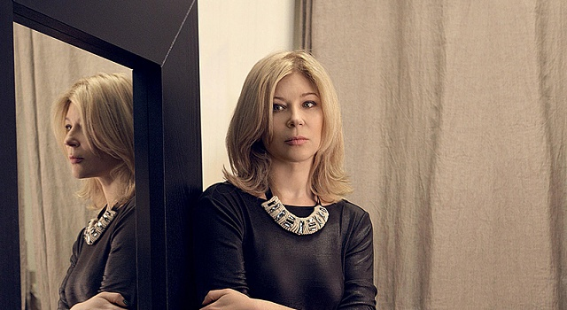
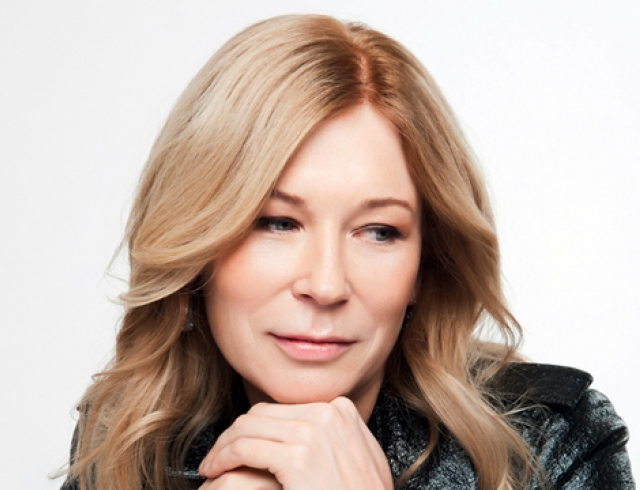

"Я з дитинства привчена до різних видів діяльності і, мабуть, тому багато речей в моєму світі міксуються та легко уживаються", - каже про себе Лілія Пустовіт.
Вона — одна з найуспішніших дизайнерів України. Першу професійну колекцію створила у 1990-х. Коли працювала в українському центрі моди "Екста". Через чотири роки Пустовіт представила свої моделі на Тулузькій виставці Easter Wind у Франції. У 1996 році отримала гран-прі "Золотий Гудзик" на міжнародному фестивалі In Vogue у Вільнюсі. Її помітив світовий модельєр та голова журі фестивалю Даніель Ештер. Він запросив Лілю Пустовіт працювати дизайнером жіночої колекції pret-a-porter в модний дім Daniel Hechter в Парижі. Через рік дизайнерка повернулася на Україну. У червні 1998-го разом із тканинною фірмою Nota Bene зареєструвала торгову марку NB Poustovit. Того ж року її колекції з'явилися на Українському тижні моди Ukrainian Fashion Week. У 2004 році Лілія Пустовіт стала президентом Синдикату моди України. За два роки - очолила експертний комітет Ради моди. Одяг бренду Poustovit носить співачка Софія Ротару, журналіст, телеведуча Ольга Герасим'юк, дружина та дочка екс-президента - Катерина та Віталіна Ющенки